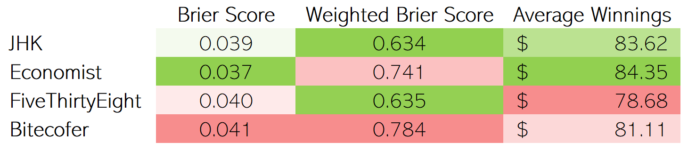

A baseball forecast that correctly predicts the winner of the 15 opening day games could be a truly accurate model, or could just be getting lucky. Over the course of 6 months and 2,430 regular season games, however, a great forecast will continue to shine whereas an initially lucky one will falter. In data rich environments like sports, there are lots of events (games) over the course of a season to judge how well a model is performing.
When there aren’t a lot of events to forecast, like presidential elections that occur once every four years (quadrennially?), it’s more difficult to tell how well a forecast performs (a handful of correct/incorrect predictions could just be good/bad luck!), but forecasters still have tools available to evaluate their model. This week, I took a look at a few different methods of comparing different models.
Scoring the Forecasters
The most common scoring method, the Brier score, is a measurement of a probabilistic forecast’s accuracy based on the confidence of the prediction. Each event has its own score, and the average of all predicted events is the model’s Brier score. Highly confident predictions are highly rewarded/punished for their accuracy/inaccuracy, whereas timid predictions don’t move the needle too much, regardless of the outcome. Scores can range from 0.00 to 1.00, with 0.00 being a perfect score (you can read more about Brier scores here, but the gist is that the lower the score, the better). In presidential forecasts, each state can be considered an event.
Oftentimes, presidential forecasters report Brier scores as weighted by each state’s number of electors. Correctly predicting Texas’ winner in this scoring system is far more important than correctly predicting Wyoming’s winner, given that Texas’ 38 electoral votes far overshadow Wyoming’s 3. I’m not quite convinced that this is the most meaningful way to evaluate models (California is pretty easy to predict and heavily weighted by its 55 electoral votes, but most of us were more concerned with Georgia’s outcome, despite being undervalued by this scoring method), but forecasters do use this scoring method.
Finally, I came up with my own scoring method that makes a “bet” between $0 and $100 based on prediction confidence. 100% confidence would turn into a $100 bet, and 50% confidence (aka, a coin toss) would be a $0 bet. Each model’s average winnings (including losses) is reported as the score.

I scored a few prominent presidential forecasts based on the above methodologies (you can read more about the JHK, Economist, FiveThirtyEight, and Bitecofer forecasts at the links here). While all the scoring methods are similar - rewarding confidence in correct predictions and penalizing meek or incorrect predictions - each model’s performance is all over the map (with perhaps the exception of Bitecofer, which scores in the lower half of all methods). But does that mean these methods are useless? No! If anything, it highlights the importance that each forecast method’s performance should be scored across a wide variety of scoring methodologies. While it might not make a huge difference at the margins, it may separate some models as clearly ahead or behind the curve.
So, how does each forecast model measure up? It depends on which yardstick you use!
Here are some other things to consider with regards to each model:
- Unlike the Economist, FiveThirtyEight, and Bitecofer models, which simulate each state’s outcome thousands of times and reports the confidence as the percentage of simulations won, the JHK forecast reports the percentage of winning results that fall within the 80% confidence interval around the expected vote. Lower confidence intervals result in tighter bands, so this relatively low confidence interval means that the model is allowed to make quite a few 100% confident predictions (which, luckily for the model, all came true in this case).
- The Bitecofer forecast is the only model that doesn’t utilize polls and instead uses an in-house developed negative-partisanship model.
- Based on conversations between Nate Silver of FiveThirtyEight and Elliott Morris of the Economist, it appears that FiveThirtyEight added a bit of uncertainty ad-hoc to account for COVID, whereas the Economist did not.
{kind=link}
As always, source files and code can be found on github. Next week, I plan on making a relatively modest prediction of the election’s popular vote outcome based on polls from the final week.
Citation
@online{rieke2021,
author = {Mark Rieke},
title = {Scorecasting},
date = {2021-02-14},
url = {https://www.thedatadiary.net/posts/2021-02-14-scorecasting},
langid = {en}
}